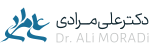
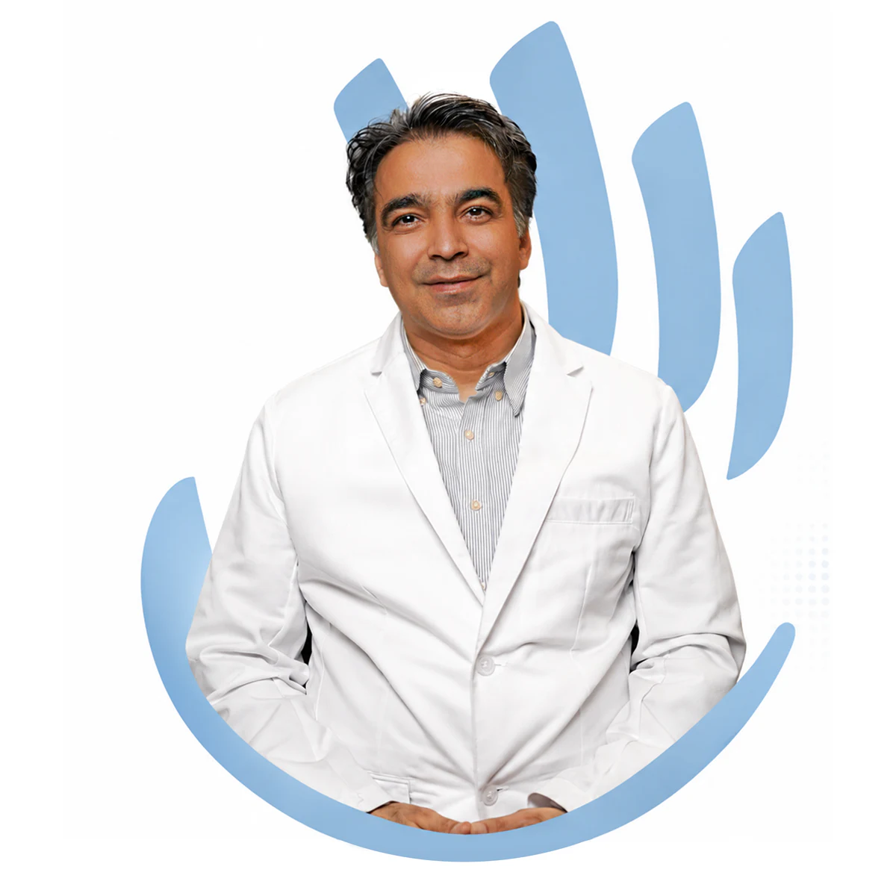
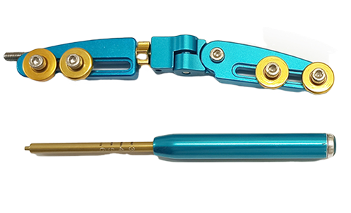
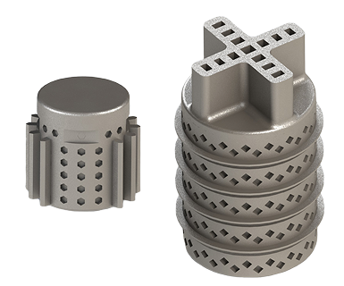
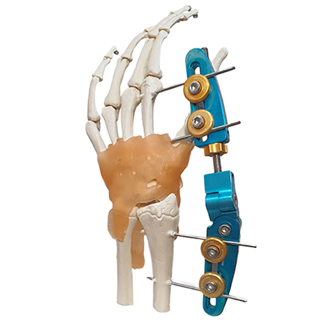
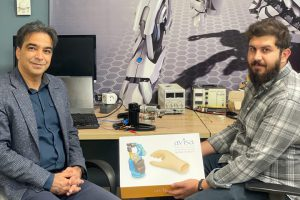
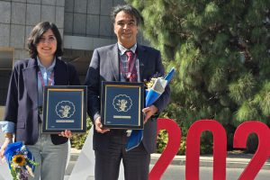
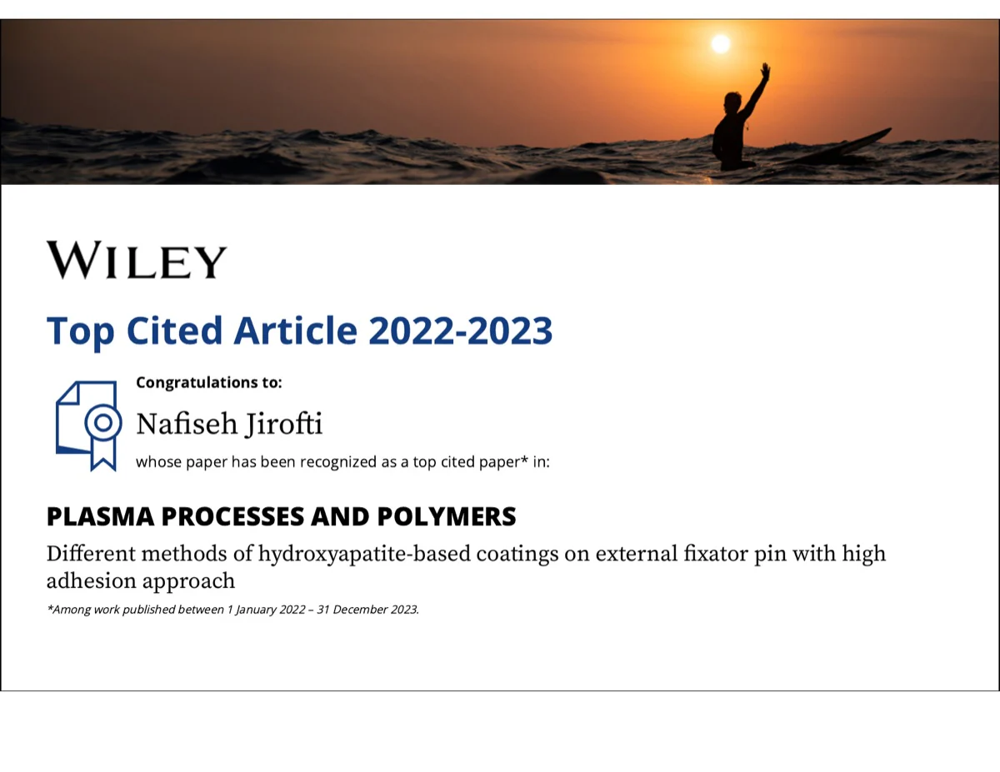
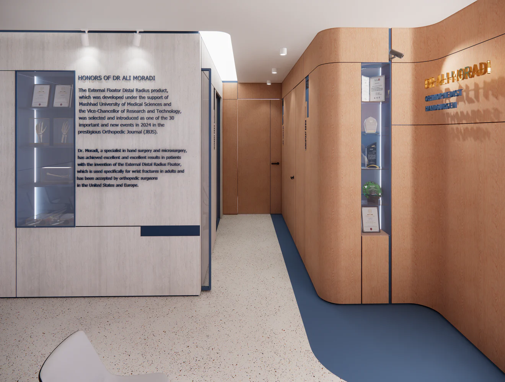

Clinical
Specialist diagnosis, treatment, reconstruction, and follow-up for conditions of the hand, wrist, and upper extremity.
Explore Clinic →
Hand surgery · Orthopedist
Advancing hand care through research and innovation.
Connected practice
Pathways
Specialist diagnosis, treatment, reconstruction, and follow-up for conditions of the hand, wrist, and upper extremity.
Explore Clinic →Clinical questions translated into devices and systems through medical engineering, prototyping, research, and intellectual property.
Explore Innovation →Clinical studies, biomechanics, prosthetic control, rehabilitation robotics, publications, and multidisciplinary collaboration.
Explore Research →Evidence, not decoration
Peer-reviewed scientific work.
Authored and contributed volumes.
Recorded innovation activity.
Appointments
For a planned, non-urgent specialist consultation at the private office.
Continue to Nobat.ir →Patients outside Mashhad or cases requiring an initial review may submit their request through the approved booking pathway.
Continue to Nobat.ir →Urgent office triage is available Saturday, Monday, and Wednesday from 15:45 to 18:30. Life- or limb-threatening emergencies require immediate emergency services.
Use the approved external service for the latest available appointment route.
Continue to Nobat.ir →! Life- or limb-threatening emergencies require immediate emergency medical services. This website does not provide diagnosis or emergency response.

Innovation

Biomechanics
Fixation concepts informed by fracture biomechanics, surgical precision, and clinical workflow.
See More →
Human–machine interface
Magnetic sensing and control research for more intuitive prosthetic-hand function.
See More →
Regenerative mechanics
A research-led approach to controlled joint distraction and tissue preservation.
See More →Latest

The 2023 award recognized research on optimal magnetic-sensor configuration for bionic-hand control.
Read update →
A 2025 certificate recognized the Surgical Approach for Bionic Hand Motor Control.
Read update →
Wiley recognized highly cited research on hydroxyapatite-based coatings for external-fixator pins.
Read update →About
Our clinic provides comprehensive care for hand, wrist, and upper-extremity conditions, offering expert diagnosis and personalized treatment for nerve compression disorders, tendon problems, joint arthritis, sports injuries, fractures, and overuse syndromes. We combine evidence-based medical management with advanced minimally invasive and surgical techniques to restore function, relieve pain, and help patients return to their daily activities with confidence. Whether you are experiencing an acute injury or a long-standing degenerative condition, our goal is to deliver precise, compassionate, and effective care tailored to your needs.
